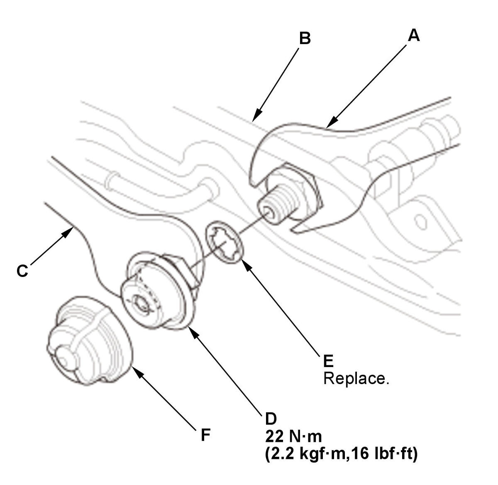

Removal and Installation
WARNING:
Flammable - Keep Fire Away
NOTE: Refer to the Fuel and Emissions Systems Service Precautions before disconnecting the fuel line.
- Fuel Rail - Remove
- Fuel Pulsation Damper - Remove

Courtesy of HONDA, U.S.A., INC.1. Place a wrench (A) on the fuel rail (B). 2. Place a wrench (C) on the fuel pulsation damper (D).
3. Fix a wrench at the fuel rail side, turn a wrench at the fuel pulsation damper side, then remove the fuel pulsation damper and the gasket (E).
4. If needed, remove the cap (F).
- All Removed Parts - Install
1. Install the parts in the reverse order of removal with a new gasket.